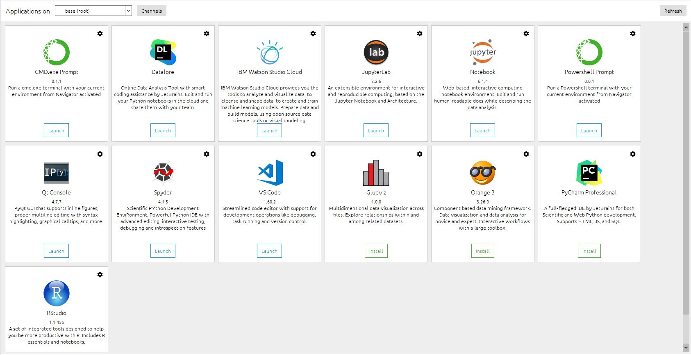
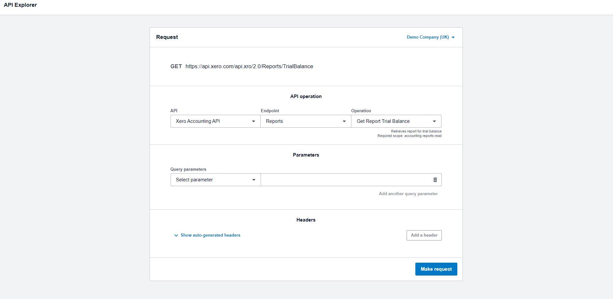
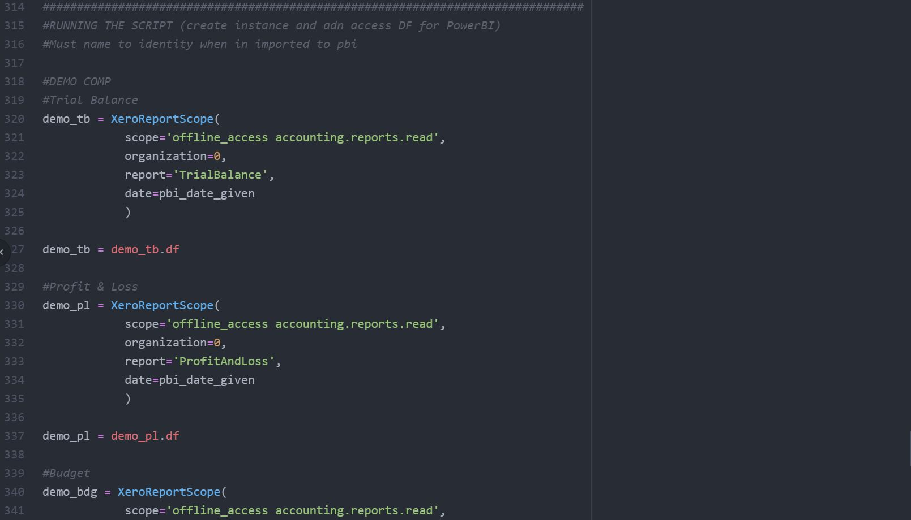

Introduction
This is my all-star project. A full data pipeline, start to finish. A dashboard with unlimited potential, all for free! This code can be used to connect to up to 25 organisations, a price which spotlight charge £495 per month for, that’s around £6K of savings a year!
With a tweak to the code this project could easily be expanded to incorporate unlimited organisations which would generate costs savings in the tens of thousands of pounds per annum . That’s something to ponder on.
Please take this with a pinch of salt! Spotlight is a full, ready made, platform of tools whereas this requires more effort to generate a similar outcome.
Just to think it’s really not too difficult: if you follow my journey that’s just 3-4 months of hard work and you too could get yourself to the same stage, ready to build a project like this.
Discovery
After some brief learning to gain a base understanding of Python I felt curious enough to stumble into the Xero Developer world. I’m always strive for self-improvement and going through difficulties is an important part of that journey. This was, on the face of it, one difficult project for a beginner. So I started where most beginners start, finding a YouTube video to copy step by step. This is where I found Edgecate, a step-by-step tutorial, walking through a Jupyter notebook. With a few changes I managed to use the Xero API to access one predetermined report. This was the first step on my journey.
It became rather clear from looking at the code I needed a better idea of what on earth was going on. I picked up A Crash Course in Python form No Starch Press.
After some brief understanding of APIs and Object-Oriented Programming (OOP) I manipulated the code into a better structure within a different IDE (atom) to run the full script.
Next I looked to pull in different types of reports but soon realised I needed an understanding of Pandas & NumPy. Alex The Analyst has some great recommendations on this. See the course I took here.
Python and Pandas
Once I had the building blocks, it was a case of using the Xero documentation to piece the abstract thoughts together. There were two invaluable resources I used for this. The first was Xero’s API Explorer. A tool that lets you request whatever report you want from Xero outputting it in a JSON format (that was not easy task in flattening!).
The other tool was the documentation on from the XeroAPI GitHub.
Both of the tools above offered help in working out what I need to do to get my reports form Xero in a pandas.DataFrame.
I finally did it! A Pandas DataFrame that contains a Trial Balance! But wait, what is somone going to do with this? Download Python and accompanying libraries, set up an IDE and run it to their command line? Surely, it’s easier at that point just to download the report from Xero manually? Well, at this stage you’d be right but it is only a half truth, a sub-section of the full picture, a pre cursor to the finished product.
Visualisation
At this point what I needed was a visualisation tool. Something that could make my code readable and useable by things other than cyborgs. This is when I approached the debate of Tableau and PowerBI. To put is simply, PowerBI allows for direct integrations using Python and SQL for free. Therefore it was a no brainer: PowerBI it was. Time for another course! Again, another top recommendation from Alex The Analyst settled that debate.

With that knowledge under my belt, it was time to get the report into the software using Python to connect to the source. I thought a simple copy and paste of a few modules would do the trick. How wrong I was… PBI appears to limit the use of Python scripts to a single module, uh oh… Let the refactoring begin!
Now condensed into a single module it got me asking broader and more challenging questions? Could I get more reports in? Could I connect to more than one company? How far can I take this?
After some playing around and further refactoring, I produced code that could be generated form a simple call statement.
Well that’s the reports in and a method to call them but the user cant change the parameters from the visualisation software at the moment? What if they want to change the date? After much googling and many tutorials (these guys these guys helped a bunch Guy in a Cube) I found PowerBI parameters. Using these I managed to insert them into my code to let the user update the date range they want ) I found PowerBI parameters. Using these I managed to insert them into my code to let the user update the date range they want to report on.
After the hard work was done, it was to use PowerBI to transform the data and input into some nice visuals for the user. And there you have it, one finished product and a full data pipeline!
Conclusion + Acknowledgements
Hopefully the above acts as a guide for aspiring Data Analysts to show that although building a data pipeline can be tricky, you can go from zero to hero off your own back.
Thanks to Nathan Davis for encouraging some “Blue Sky” thinking and creating a great team at Chiene+Tait: Evolve.
Thanks to Alex The Analyst for offering a map to the mystical realms of Data Analytics.
As always, please feel free to reach out @SidTrengove.